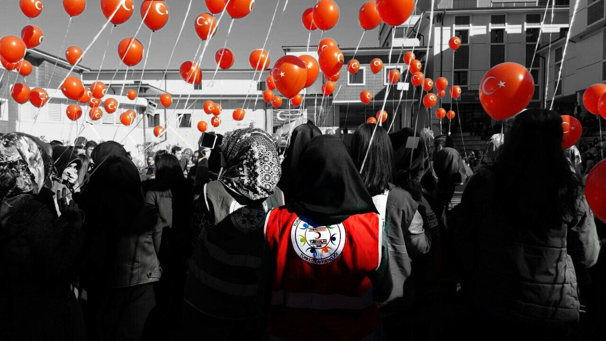
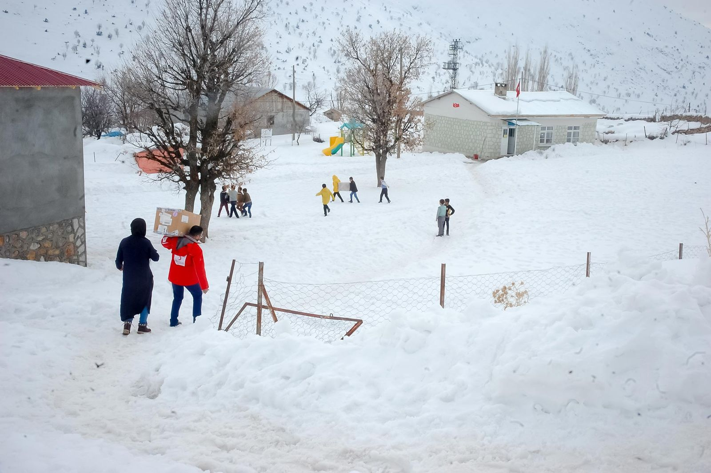
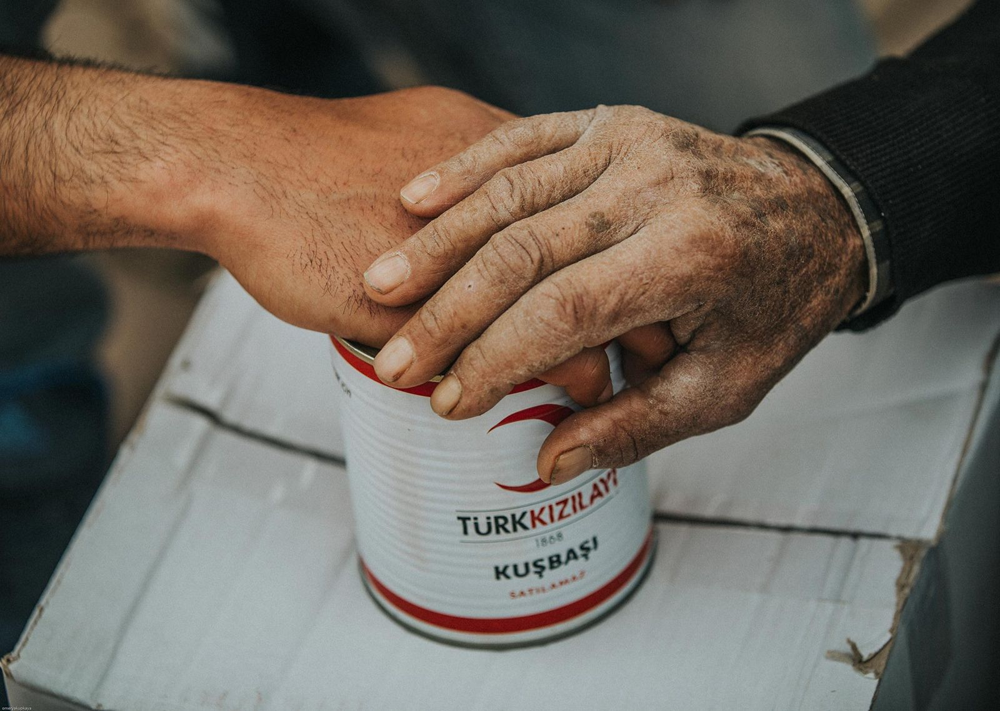

Yapay zeka eğitimleri, 1. hafta
Claude ile Tanışma
1 Aralık 2026
Teknik Bilimler MYO, Lab3

Yapay zeka eğitimleri serisi
Dört hafta, her salı, her hafta yeni bir konu. Her eğitimin sonunda katılım belgesi var.
1. hafta, bugün
Claude ile Tanışma
Giriş, iyi soru, güvenli kullanım
2. hafta
Claude ile Yazmak
Dilekçe, duyuru, e-posta, özet
3. hafta
Office ve yapay zeka
Word ve Excel işlerinde yardım
4. hafta
Kod yazmadan üretmek
Mini uygulama ve Kızılay projesi
Bugün ne yapacağız?
Tanışacağız
Claude'a girip ilk sohbetimizi yapacağız
Doğru soracağız
İyi bir istemin formülünü öğreneceğiz
Kontrol edeceğiz
Cevabı sınamayı ve güvenli kullanmayı öğreneceğiz
Bugün dinlemekten çok yapacağız. Takılırsan el kaldır, yanındakiyle birlikte çalışmak serbest.
Isınma sorusu
Bu sunumu kim hazırladı?
Yapay zekayı nerede gördünüz?
Telefonda, sosyal medyada, haberlerde... Hiç kullanmadıysan da sorun yok!
1
Yapay zeka ve Claude
Yapay zeka ne, nasıl çalışır, Claude bunun neresinde?
Yapay zeka nedir?
Bilgisayarların insan gibi anlama, tahmin etme ve karar verme işlerini yapabilmesi. Her gün kullanıyoruz:
Navigasyon: trafiğe göre yol önerir
Çeviri: metni başka dile çevirir
Öneriler: izleyeceğin videoyu seçer
Kamera: yüzünü tanıyıp kilidi açar
Üretken yapay zeka
Sadece tanımaz, yeni bir şey üretir: metin, görsel, ses, kod.
Ne üretebilir?
- Yazı: duyuru, özet, e-posta
- Görsel ve ses
- Liste, tablo, plan
Sohbet asistanları
- Claude (Anthropic)
- ChatGPT (OpenAI), Gemini (Google)
- Copilot (Microsoft)
Nasıl çalışır?
Telefon klavyesi bir sonraki kelimeyi tahmin eder:
Yarın sabah erkenden kalkıpokulagideceğim
Claude da aynı fikirle çalışır, ama çok daha fazla metin okuyarak öğrendiği için cümleleri, paragrafları, hatta bütün bir planı tahmin edebilir.
Claude nedir?
Anthropic şirketinin yapay zeka asistanı, 2023'ten beri kullanımda
Türkçe dahil birçok dilde konuşur
Tarayıcıda, telefonda ve bilgisayar uygulamasında çalışır
Dosya ve fotoğraf okuyabilir, ücretsiz kullanılabilir
Neler yapabilir, nelere dikkat?
Yapabilir
- Metin yazar, düzeltir
- Özetler, açıklar, çevirir
- Fikir ve liste üretir
Dikkat
- Yanılabilir, uydurabilir
- Her şeyi bilmez
- Son karar ve sorumluluk sende
Boşluğu doldur
Claude bir yapay zeka .
Claude bir sonraki kelimeyi ederek yazar.
Claude da yapabilir, bu yüzden cevabı ederim.
2
Claude ile tanış
Bilgisayara gir, Claude'u aç, ilk mesajını gönder.
1. Adım: Bilgisayara giriş
- Açılan giriş sayfasına TC kimlik no yaz
- UBYS şifreni yaz
- Giriş'e tıkla
2. Adım: Claude'a giriş
- Adres çubuğuna claude.ai yaz
- Hesabını nasıl açtıysan öyle gir: Google ya da e-posta
- Mesaj kutusunu görüyorsan tamam
3. Adım: Claude ekranını tanı
 1
2
3
1
2
3
- Mesaj kutusu: buraya yazarsın
- Gönder: ok düğmesi ya da Enter
- Yeni sohbet: her yeni konu için
Sıra sizde, 3 dakika
İlk mesajını gönder
Merhaba, benim adım ___. Kendini bana 3 cümlede tanıt.
3
İyi soru sormak
Ne kadar net sorarsan o kadar iyi cevap alırsın.
İyi istemin formülü
İstem, Claude'a yazdığın mesaj demek. Ne kadar net anlatırsan, o kadar iyi cevap alırsın.
Hangisi daha iyi?
B
Genç Kızılay için kan bağışı kampanyasına çağıran 3 cümlelik samimi bir Instagram duyurusu yaz.
B neden daha iyi?
Sıra sizde, 6 dakika
Farkı kendin gör
1. Önce A'yı gönder:
Kızılay yaz
2. Yeni sohbet aç, B'yi gönder:
Genç Kızılay için kan bağışı kampanyasına çağıran 3 cümlelik samimi bir Instagram duyurusu yaz.
Altı altın ipucu
Bağlam ver
Kimsin, durum ne?
Rol ver
"Bir ilk yardım eğitmeni gibi..."
Örnek göster
"Şuna benzer bir şey istiyorum"
Biçim söyle
Liste mi, tablo mu, kaç madde?
Adım adım iste
"Önce plan yap, sonra yaz"
Soru sormasına izin ver
"Eksik bilgi varsa önce bana sor"
Bir örnek sohbet
Sen deneyimli bir ilk yardım eğitmenisin. Üniversite öğrencilerine, deprem anında yapılacakları 4 maddelik kısa bir liste hâlinde anlat.
- Çök: Olduğun yerde yere çök.
- Kapan: Sağlam bir masanın altına gir, başını koru.
- Tutun: Sarsıntı bitene kadar tutun.
- Sarsıntı bitince sakin ol, merdivenle çık.
Beğenmedin mi? Sohbete devam et
İlk cevap bir taslaktır. Aynı sohbette düzeltmesini iste:
Daha kısa yap ve 2 emoji ekle.
Tabii! İşte daha kısa hâli...
Şimdi daha resmi bir dille yaz.
Sıra sizde, 5 dakika
Cevabı 2 kez düzelttir
B'nin cevabının altına sırayla yaz:
Daha kısa yap ve 2 emoji ekle.
Şimdi daha resmi bir dille yaz.
Formülü tamamla
İyi istem: için? + ? + ?
Rol ver: "Bir ilk yardım gibi..."
İlk cevabı beğenmezsem ederim.
Mola
5 dakika sonra devam ediyoruz.
Bilgisayarı kapatma!

4
Kontrol et, güvenli kullan
Claude çok yardımcıdır ama sorumluluk her zaman bizde.
Claude da yanılabilir
Bazen kendinden emin bir şekilde yanlış bilgi verebilir. Buna halüsinasyon ya da uydurma denir.
En çok tarih, sayı, isim ve kaynaklarda olur
Önemli bilgiyi başka bir kaynaktan kontrol et
Hatayı bul
Claude'dan şöyle bir cevap geldiğini düşünün:
Türk Kızılay 1923 yılında kuruldu. Afetlerde barınma ve beslenme desteği verir, kan bağışı çalışmaları yürütür.
1923 değil, 1868. Osmanlı döneminde, İstanbul'da kuruldu.
Nasıl kontrol ederim?
- Resmi kaynağa bakkizilay.org.tr, afad.gov.tr, e-Devlet
- Claude'a sor"Bundan emin misin? Nereden biliyorsun?"
- Bir uzmana danışSağlık, hukuk, para konularında mutlaka
Kural: Bir bilgiyi başkasına aktaracaksan, önce doğrula.
Claude'a asla yazma
Kişisel bilgiler
- TC kimlik no
- Telefon, adres
- Şifreler
Kızılay'da
- Afetzedelerin bilgileri
- Bağışçıların sağlık bilgileri
- Gönüllülerin iletişim bilgileri
Kural: "Bunu bir yabancıya söyler miydim?" Hayırsa yazma.
Hangisini Claude'a yazabilirim?
Öğrenmek için kullan
Öğrenmeni hızlandırır
- Anlamadığın konuyu açıklat
- Kendini sınavla: "Bana 5 soru sor"
- Kendi taslağını geliştir
Öğrenmeni engeller
- Ödevi kopyalayıp teslim etmek
- Okumadan, kontrol etmeden paylaşmak
- Düşünmeyi tamamen bırakmak
5
Öğrendiğini kullan
Bir Kızılay gönüllüsü olarak gerçek bir işi Claude ile birlikte yap.
Sıra sizde, 8 dakika
Kızılay görevi
Birini seç, formülü ve ipuçlarını kullan:
Deprem çantası kontrol listesi
Yeni gönüllüye hoş geldin mesajı
Örnek: Genç Kızılay gönüllüleri için deprem çantasına konacak 10 maddelik kısa bir kontrol listesi hazırla.
Sonuçlarımızı paylaşalım
- 2–3 gönüllü sonucunu sesli okusun
- İstemine ne yazdın?
- Sonradan neyi düzelttirdin?

Mini sözlük
- Yapay zeka
- Bilgisayarın örneklerden öğrenip tahmin yapması
- Üretken yapay zeka
- Yeni metin, görsel ya da ses üreten yapay zeka
- İstem
- Claude'a yazdığın mesaj, isteğin
- Halüsinasyon
- Yapay zekanın emin bir dille yanlış bilgi vermesi
- Sohbet
- Claude'un hatırladığı mesajlar dizisi; yeni konu, yeni sohbet
- Kişisel veri
- Birini tanımlayan bilgi: TC no, telefon, adres, sağlık
Çıkış quizi
1. İyi istem: Kim için + Ne +
2. "Claude'un cevabı her zaman doğrudur."
3. Afetzedelerin bilgilerini Claude'a .
Bugün öğrendiklerimiz
- Claude'a girip sohbet etmek
- Kim için + Ne + Nasıl ile iyi istem yazmak
- Cevabı kontrol etmek, kişisel veriyi paylaşmamak
Evde dene
- Bir ders konusunu açıklat
- "Bana 5 soru sor" de, kendini sına
- Bir duyuruyu 2 kez düzelttir
Gelecek hafta: Claude ile Yazmak. Dilekçe, duyuru, e-posta.
Teşekkürler!
Katılım belgeleri Genç Kızılay ÇOMÜ tarafından iletilecek.
Çıkmadan önce Claude'dan ve Google hesabından çıkış yap!
Fotoğraflar: genckizilay.org.tr. İkonlar: Lucide (ISC lisansı). Ekran görselleri temsilidir.